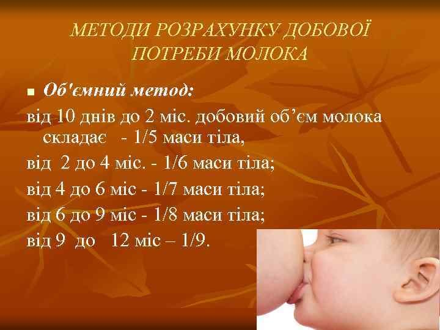

Скільки залишити молока?
Бувають різні ситуації у житті, коли необхідне годування зцідженим грудним молоком. Наприклад:
- лікування, несумісне з грудним вигодовуванням;
- різної частоти та тривалості відлучення мами по справах (включно з роботою, лікуванням поза домом);
- годування донорським молоком.
Слід зауважити, що:
Годувати дитину зцідженим грудним молоком варто не з пляшки, а за допомогою альтернативних методів .
Якщо лікування несумісне з грудним вигодовуванням, лактацію підтримують регулярними зціджуваннями, а коли буде знову безпечно годувати дитину, тоді грудне вигодовування продовжують.
Як перевірити ліки на сумісність з грудним вигодовуванням є детально описано тут .
Якщо мама відлучається по справах і є така можливість, то дитину варто брати з собою, або дитину разом з татом (бабусею, нянею), які будуть поруч з вашим місцем перебування, або зможуть туди підійти для годування.
Якщо ваша відсутність буде тривалою, не забувайте про зціджування для запобігання лактостазу та підтримки лактації (поповнення власного банку грудного молока). Як зберігати зціджене молоко є інформація тут .
Після півроку, коли введено прикорм і годування грудьми бувають рідше, можна планувати день так, щоб прикорм був в той час, коли мамі необхідно відлучитися.
Найпростіше організувати відлучення в проміжках між дитячими снами: погодувати, приспати, відлучитися, повернутися до наступного сну.

Яку кількість зцідженого молока необхідно залишити дитині на час вашого відлучення з дому? Як розрахувати необхідну порцію і кількість цих порцій?
Існує кілька способів розрахунку орієнтовного добового об’єму їжі для дитини та разової порції. Розповім найпростіший з них, який є описаний у 149 наказі МОЗ України .
Орієнтовний добовий об'єм їжі для дитини віком до 12 місяців:
- від народження до 10 дня / 70–80 × день життя дитини
- від 10 днів до 2 місяців / 1/5 маси тіла
- від 2 місяців до 4 місяців / 1/6 маси тіла
- від 4 місяців до 6 місяців / 1/7 маси тіла
- від 6 місяців до 12 місяців / 1/8–1/9 маси тіла
❗ Наголошу, якщо Ваша дитина на змішаному годуванні чи є проблеми з набором ваги, для визначення необхідної кількості докорму та її корекції варто звернутися до педіатра чи консультанта з грудного вигодовування!
Отож, наведу приклад розрахунку для дитини 2,5 місяці і вагою 6100 г.
✔ Заглядаючи у табличку, визначаємо добову кількість: 6100 / 6 = 1017 мл.
Максимальний добовий об’єм харчування для дитини, що знаходиться на грудному вигодовуванні, віком до 6 міс — 1000 мл, 6–12 місяців — 1000–1100 мл. Тобто приймаємо за добову кількість не 1017 мл, а 1000 мл.
✔ Далі розраховуємо разову кількість:
- ✅ якщо годування кожні 2 год: 1000 / 12 = 83 мл;
- ✅ якщо кожні 3 год: 1000 / 8 = 125 мл.
Це максимальні порції! 😉